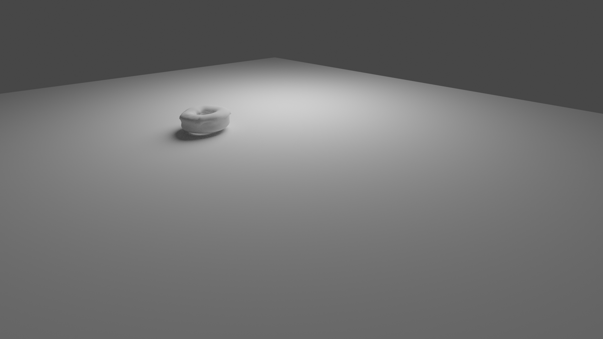
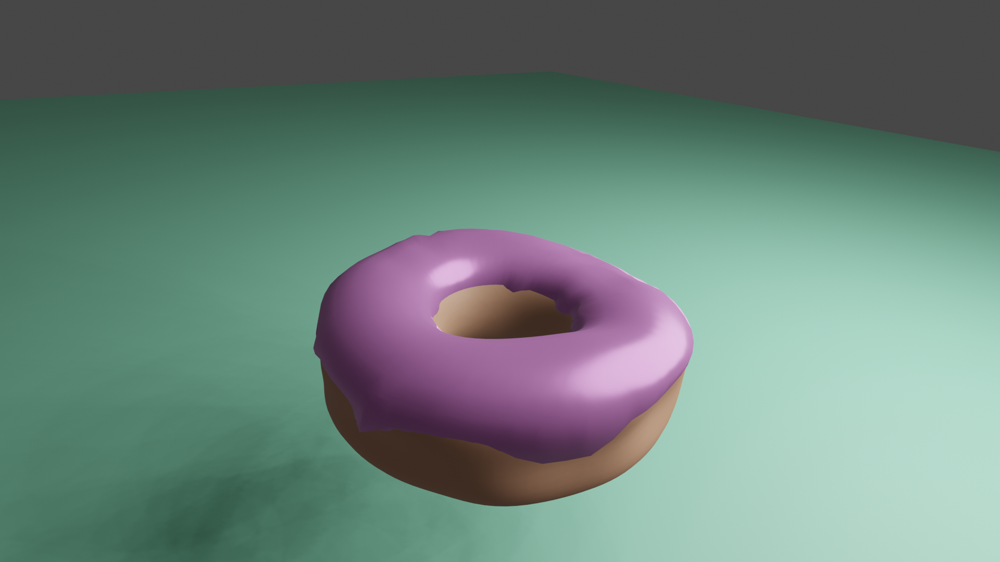
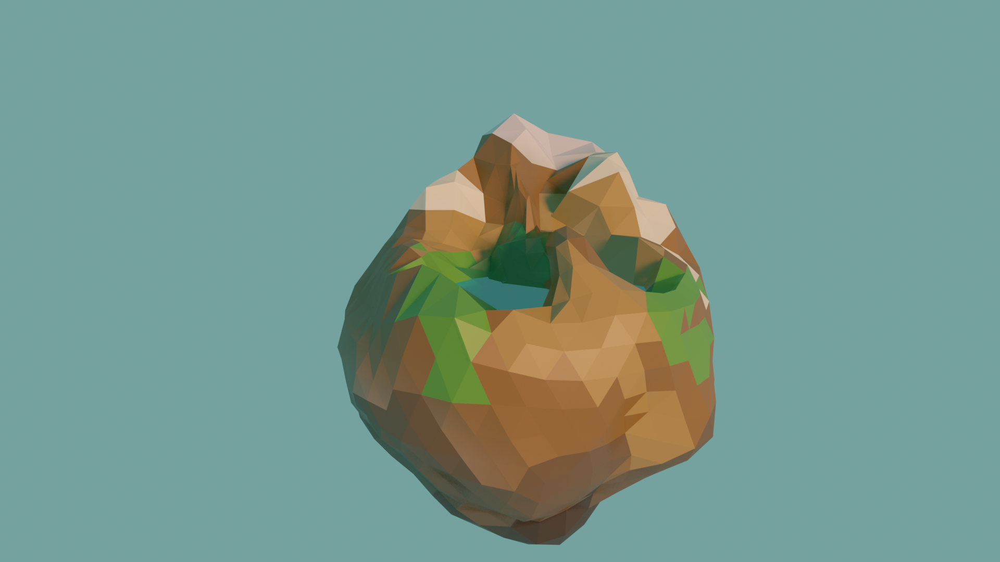
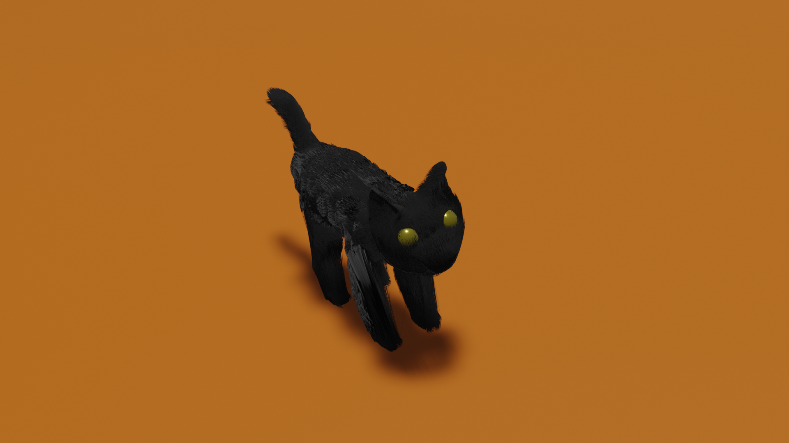

How I learned to use Blender
Here's some sort of diary of me learning to use Blender.
This is not some sort of 30 day challenge, this is me in it for the long haul. And this means taking some healthy
breaks in between days. That's why i started in August 2020 but have only worked for a few days up until now. Life happens and it's ok
to take breaks, but it's important to keep going.
1: Basic functionality, following Blender Gurus donut tutorial
2: more donut - it looks horrible, but i was so proud i made this thing!
3: added material to donut
4: written a cheatsheet, available on github and here
5: rendered a low poly planet, later added some trees
6: laptop died, had to pause for quite some time
7: tried modeling a human basemesh. failed.
8: tried sculpting a human basemesh. gave up after some time.
9: rigged a downloaded human basemesh. failed several times but learned a lot and finally had my first rig to play around with. in the end.
10: modeled a small spaceship that glows in the dark
11: made a small animation with water particles. my (new) computer almost died from going brrrrrr (oof)
12: started modeling Mia Wallace (a human!) from 1 reference image. head (except eyelids and hair) is sculpted.
13: started modeling a cat, looks ok so far :)
14: added fur to cat, first blender related pic on new instagram
